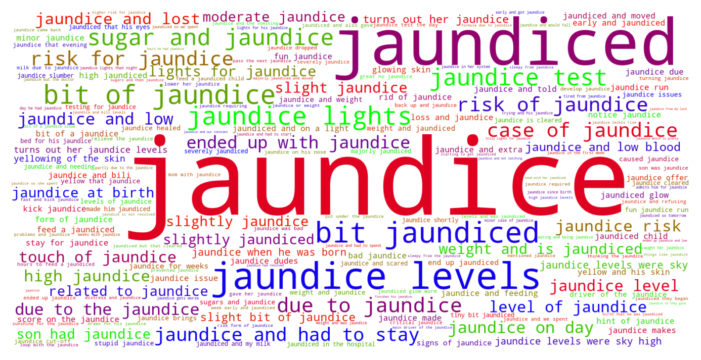
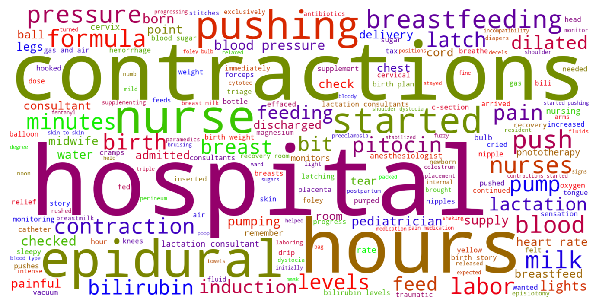

Jump to section:
Samples from Social CorpusHits per UMLS Alias on Social Corpus
Word Cloud Comparison
Embedding Space Comparison
Nearest Neighbors by Semantic Type
Related Analysed Concepts
Samples from Social Corpus
Everything I was told was okay to eat really wasn't , and I was mis-educated and informed wrong by my doctors and now my health and my baby's health are at risk , and I've only got 10 weeks left but if I do have gestational diabetes , that increases risk for early labor , as well as jaundice , hypoglycemia , and worst of all still birth .
Confidence: 1.000. Reddit link
Jack is five weeks old today , and while adjusting to life with a newborn has been hard ( jaundice , feeding issues , etc. ) , we're also so happy to have him with us .
Confidence: 1.000. Reddit link
So now I'm like ready to cut a bitch , and I page the nurse saying we need to supplement with formula because I'm not starving another baby for 4 days until she gets severe jaundice like what happened the last time .
Confidence: 0.544. Reddit link
Then I made the mistake of listening to some bullshit lactation consultants and ended up accidentally starving my daughter for 72 hours , resulting in moderate jaundice that had to be treated with phototherapy and extended our hospital stay to a week .
Confidence: 0.686. Reddit link
We were pressured to spend two nights in the hospital and given the jaundice risk , I didn't push back though being in the hospital was annoying and pretty awful .
Confidence: 0.784. Reddit link
She had jaundice and had to go on the lights twice , she won't eat more than 2 ounces at a time and 16 ounces a day , had her lip and tongue tie cut recently and we're not exploring reflux medications .
Confidence: 1.000. Reddit link
We are on Android and currently using the free version of [ Baby Manager ]( * Pediatricians notice jaundice , bilirubin levels checked twice .
Confidence: 0.784. Reddit link
She came out with terrible bruising ( doctor said " that could be in a textbook ") , which eventually gave her jaundice so she spent a night under a light .
Confidence: 0.535. Reddit link
My baby is jaundiced enough that we moved our pediatrician visit up by a day and I have been back at the medical center three days in a row ( ped is across the street , center has wonderful breastfeeding support , plus we had to get his blood drawn for bilirubin levels Thursday and Friday , and Saturday was the private appt with the LC ) .
Confidence: 0.612. Reddit link
\- I get her in my room the next evening but they're monitoring her jaundice .
Confidence: 1.000. Reddit link
Hits per UMLS Alias on Social Corpus
-
jaundice
575 hits
-
jaundiced
112 hits
-
jaundice finding
3 hits
-
jaundice nos
3 hits
-
yellow skin
2 hits
-
yellowing skin
2 hits
-
icterus
0 hits
-
icteric
0 hits
-
icterus nos
0 hits
Word Cloud Comparison
Keywords matching C0022346
Keywords matched against concept. Word size represents frequency.
Keywords co-occurring with C0022346
Co-occurrence is measured at the document-level (i.e. Reddit submissions). Frequencies are normalized to account for keywords common to all CUIs.
Embedding Space Comparison
T-SNE comparison for word embeddings learned from medical domain (EuroPMC) and social media (Reddit) independently.
Pearson correlation for union of closest 1000 neighbors: -0.091
Nearest Neighbors by Semantic Type
Most similar concepts in each of the selected UMLS semantic types. Based on concept embeddings from social corpus.
T184 (Sign or Symptom)
-
C0022346
Jaundice
1.000 Similarity
-
C0019079
Blood coughed
0.598 Similarity
-
C0023533
Vaginal white discharge
0.597 Similarity
-
C0423006
Eye sticky
0.584 Similarity
-
C0333272
Blood tinged discharge
0.576 Similarity
-
C0032781
Post nasal drip
0.555 Similarity
-
C0240194
Blue lip
0.534 Similarity
-
C0333243
Pitting edema
0.533 Similarity
T047 (Disease or Syndrome)
-
C0022353
Baby jaundice
0.934 Similarity
-
C1566050
Severe jaundice neonate
0.875 Similarity
-
C3502107
Breastfeeding jaundice
0.766 Similarity
-
C0043395
Yellow fever
0.650 Similarity
-
C0020615
Low blood sugar
0.600 Similarity
-
C0018932
Bright red blood stool
0.579 Similarity
-
C0036690
Sepsis
0.578 Similarity
-
C0025048
Mas
0.572 Similarity
T046 (Pathologic Function)
-
C0270215
Breast milk jaundice
0.839 Similarity
-
C0271412
Bleeding ear
0.579 Similarity
-
C0034063
Pulmonary edema
0.575 Similarity
-
C0241742
Bleeding wound
0.568 Similarity
-
C0162834
Hyperpigmentation
0.564 Similarity
-
C4075684
Hypoxemia during surgery
0.563 Similarity
-
C0152158
Not producing any milk
0.560 Similarity
-
C0015402
Bleeding from eye
0.552 Similarity
T074 (Medical Device)
-
C0182262
Bilirubin lights
0.821 Similarity
-
C0785105
Bilirubin test
0.795 Similarity
-
C0462877
Oxygen giving set
0.575 Similarity
-
C0030067
Oxygenator
0.545 Similarity
-
C3696780
Tube oxygen
0.540 Similarity
-
C2945625
Feedings tube
0.536 Similarity
-
C0179361
Blood pump
0.536 Similarity
-
C0184352
Fluid warmer
0.518 Similarity
T059 (Laboratory Procedure)
-
C0344395
Bilirubin levels
0.784 Similarity
-
C0201913
Bili
0.774 Similarity
-
C2986515
Phototesting
0.549 Similarity
-
C0392201
Blood sugar levels
0.526 Similarity
-
C0518015
Test hemoglobin
0.515 Similarity
-
C0023508
White blood cells
0.505 Similarity
-
C0202514
Blood urine test
0.503 Similarity
-
C0018941
Blood test
0.499 Similarity
T061 (Therapeutic or Preventive Procedure)
-
C0199741
Newborn phototherapy
0.739 Similarity
-
C0031765
Phototherapy
0.636 Similarity
-
C0184713
Discharge home
0.622 Similarity
-
C1260866
Blood oxygenator
0.591 Similarity
-
C0038847
Feeding supplementary
0.532 Similarity
-
C0242297
Supplementation
0.531 Similarity
-
C0199451
Cpap
0.529 Similarity
-
C0150773
Care skin
0.527 Similarity
T201 (Clinical Attribute)
-
C4551342
Color wound discharge
0.620 Similarity
-
C0429622
Oxygen supply
0.613 Similarity
-
C0005850
Blood volume
0.501 Similarity
-
C0231832
Breathing rate
0.492 Similarity
-
C0007165
Heart output
0.481 Similarity
-
C0232856
Urine output
0.478 Similarity
-
C1286236
Odour skin
0.470 Similarity
-
C1285590
Weight gain amount
0.463 Similarity
T079 (Temporal Concept)
-
C3864299
Discharge time
0.614 Similarity
-
C2361123
Date discharge
0.521 Similarity
-
C3540000
Newborn age hours
0.468 Similarity
-
C5204315
Time second temperature
0.450 Similarity
-
C0376674
After feeding
0.450 Similarity
-
C3489408
Hospital stay
0.448 Similarity
-
C0554816
Morning after
0.444 Similarity
-
C0149694
Follow up pediatric appointment
0.438 Similarity
T031 (Body Substance)
-
C0012621
Discharge
0.596 Similarity
-
C0585350
Mucous discharge
0.546 Similarity
-
C0009413
Colostrum
0.538 Similarity
-
C0162371
Cord blood
0.509 Similarity
-
C0025047
Meconium
0.508 Similarity
-
C0005835
Blood stained
0.504 Similarity
-
C0440739
Mixed venous blood
0.503 Similarity
-
C0238626
Amniotic meconium
0.499 Similarity
T054 (Social Behavior)
-
C0679426
Incompatibility
0.548 Similarity
-
C5197684
Fat shaming
0.450 Similarity
-
C0028658
Nurse patient
0.424 Similarity
-
C0597109
Nurse role
0.400 Similarity
-
C0030209
Bonds pair
0.395 Similarity
-
C4505276
Body pushing
0.390 Similarity
-
C0686975
Trouble with law
0.362 Similarity
-
C0558346
Ritual surgery
0.357 Similarity
T042 (Organ or Tissue Function)
-
C0037290
Skin tone
0.547 Similarity
-
C0231940
Oxygenation
0.511 Similarity
-
C0232102
Blood fluidity
0.499 Similarity
-
C0037271
Aged skin
0.497 Similarity
-
C0150479
Blood gas
0.460 Similarity
-
C1160388
Respiratory tube development
0.457 Similarity
-
C0026132
Milk let down
0.454 Similarity
-
C0019116
Stopping bleeding
0.452 Similarity
T037 (Injury or Poisoning)
-
C0269271
Bleeding from breast
0.546 Similarity
-
C0558188
Nipple bruised
0.523 Similarity
-
C0432750
Bruised face
0.497 Similarity
-
C0009938
Bruised
0.493 Similarity
-
C0417108
Jump from burning hospital
0.491 Similarity
-
C0269858
Traumatic lesion during delivery
0.490 Similarity
-
C0417045
Fall from hospital gurney
0.488 Similarity
-
C0043250
Wound
0.471 Similarity
T023 (Body Part, Organ, or Organ Component)
-
C0205029
Head skin
0.535 Similarity
-
C0221927
Skin fat
0.520 Similarity
-
C0227486
Left liver
0.518 Similarity
-
C0023759
Lipped
0.503 Similarity
-
C0448809
Skin under chin
0.503 Similarity
-
C0149538
Skin breast
0.501 Similarity
-
C0024109
Lung
0.497 Similarity
-
C0225730
Left lung
0.494 Similarity
T034 (Laboratory or Test Result)
-
C0019029
Hemoglobin levels
0.523 Similarity
-
C3672033
Bile acid levels raised
0.515 Similarity
-
C0428309
Magnesium blood
0.495 Similarity
-
C1261430
Fasting blood sugar
0.493 Similarity
-
C0428554
Blood glucose levels
0.492 Similarity
-
C0427729
Urine blood test = negative
0.472 Similarity
-
C0241988
M spike
0.468 Similarity
-
C5201036
Low platelets
0.460 Similarity
T044 (Molecular Function)
-
C0369768
Oxygen saturation
0.519 Similarity
-
C1749457
Ligands activity
0.377 Similarity
-
C2247516
Sgah
0.353 Similarity
-
C1150342
Dopachrome rearranging enzyme
0.342 Similarity
-
C0887940
Gene arrangements
0.340 Similarity
-
C1150833
Spec
0.338 Similarity
-
C1152025
Docs
0.334 Similarity
-
C0010357
Cross reactive
0.328 Similarity
T032 (Organism Attribute)
-
C0005612
Weight baby
0.519 Similarity
-
C2709005
Dry weight
0.467 Similarity
-
C0005910
Weight
0.460 Similarity
-
C0031911
Pigment
0.442 Similarity
-
C1274637
Light brown hair
0.442 Similarity
-
C0949285
Antibiotic resistance
0.435 Similarity
-
C0005903
Temperature
0.434 Similarity
-
C0003533
Apgar scores
0.427 Similarity
T019 (Congenital Abnormality)
-
C0432355
Small nipples
0.506 Similarity
-
C0264303
Laryngomalacia
0.487 Similarity
-
C0152415
Tie tongue
0.484 Similarity
-
C0003492
Coarctation
0.464 Similarity
-
C0431564
Bumpy tongue
0.463 Similarity
-
C0332941
Corrected transposition
0.457 Similarity
-
C0266092
Lip pits
0.456 Similarity
-
C0008924
Cleft lip
0.431 Similarity
T039 (Physiologic Function)
-
C0232338
Blood flow
0.504 Similarity
-
C0232851
Flow urine
0.493 Similarity
-
C0035203
Ventilation
0.490 Similarity
-
C0423556
Light pressure touch
0.467 Similarity
-
C1456599
Lungs breathing
0.453 Similarity
-
C0232515
Spit
0.428 Similarity
-
C0442695
Bearing down
0.418 Similarity
-
C0423553
Light touch
0.382 Similarity
T060 (Diagnostic Procedure)
-
C0037296
Skin test
0.504 Similarity
-
C3825243
Blood sugar monitoring
0.498 Similarity
-
C0042793
Vision test
0.461 Similarity
-
C0696216
Test tine
0.461 Similarity
-
C0741195
Apgar
0.451 Similarity
-
C0150496
Heart monitoring
0.450 Similarity
-
C0190979
Blood draws
0.442 Similarity
-
C0017200
Blood pool scan
0.438 Similarity
T200 (Clinical Drug)
-
C0723917
Triple antibiotic ointment
0.489 Similarity
-
C3218395
Papain pill
0.395 Similarity
-
C0599396
Sleeping pills
0.370 Similarity
-
C3216620
Progesterone vaginal product
0.363 Similarity
-
C1247687
Progesterone suppositories vaginal
0.343 Similarity
-
C1251945
Hydrocortisone cream
0.340 Similarity
-
C0978093
Lanolin cream
0.333 Similarity
-
C1617085
Glycerin suppositories
0.332 Similarity
T100 (Age Group)
-
C0021289
Newborn
0.487 Similarity
-
C3494262
Extremely preterm infant
0.454 Similarity
-
C4048294
Preterm baby
0.393 Similarity
-
C4551581
Full term baby
0.362 Similarity
-
C0596728
65 years old
0.331 Similarity
-
C0021270
Baby
0.301 Similarity
-
C0870221
Boy
0.285 Similarity
-
C0682054
Mature adult
0.272 Similarity
T005 (Virus)
-
C3743464
Mycobacteriophage whirlwind
0.486 Similarity
-
C0597404
Respiratory virus
0.458 Similarity
-
C3768023
Mycobacteriophage conspiracy
0.416 Similarity
-
C4415400
Phage wrath
0.394 Similarity
-
C0035236
Rsv
0.384 Similarity
-
C0599652
Leaky virus
0.371 Similarity
-
C4437655
Lightbulbvirus
0.364 Similarity
-
C4433204
King virus
0.352 Similarity
T195 (Antibiotic)
-
C0003232
Antibiotics
0.459 Similarity
-
C0718575
Antibiotics ear
0.443 Similarity
-
C0028741
Nystatin
0.407 Similarity
-
C0279516
Antibacterial
0.369 Similarity
-
C0002645
Amoxicillin
0.346 Similarity
-
C0076686
Timentin
0.340 Similarity
-
C0310367
Today
0.337 Similarity
-
C0723285
Septa
0.327 Similarity
T049 (Cell or Molecular Dysfunction)
-
C4725191
Stop lost
0.452 Similarity
-
C0544885
Stop gain
0.377 Similarity
-
C0392769
Patching
0.366 Similarity
-
C1705285
Mutated
0.347 Similarity
-
C0008625
Chromosomal abnormality
0.341 Similarity
-
C4725190
Start lost
0.329 Similarity
-
C0008631
Markers chromosome
0.302 Similarity
-
C0041107
Trisomy
0.296 Similarity
T048 (Mental or Behavioral Dysfunction)
-
C0038436
Ptsd
0.452 Similarity
-
C0563172
Dangerous plans
0.440 Similarity
-
C0241424
Bite tongue
0.435 Similarity
-
C0270327
Bed wetting
0.435 Similarity
-
C0338927
Hospitalism
0.434 Similarity
-
C0009676
Confused
0.429 Similarity
-
C0393760
Trouble falling asleep
0.421 Similarity
-
C0003537
Losing words
0.405 Similarity
T190 (Anatomical Abnormality)
-
C0266785
Umbilical cord issue
0.451 Similarity
-
C0240063
Keyhole iris
0.440 Similarity
-
C3887590
Stricture ureter
0.437 Similarity
-
C0399453
Flabby alveolar ridge
0.435 Similarity
-
C0014511
Wen
0.434 Similarity
-
C4025734
Anomaly scalp
0.419 Similarity
-
C4025087
Long finger bone
0.404 Similarity
-
C0281892
Left hernia
0.402 Similarity
T041 (Mental Process)
-
C0001762
After image finding
0.443 Similarity
-
C3887804
Upset
0.425 Similarity
-
C0546816
Persistence
0.415 Similarity
-
C0043012
Vigilant
0.398 Similarity
-
C0424157
Fear going crazy
0.389 Similarity
-
C0596764
Impression
0.382 Similarity
-
C0237428
Optimism
0.381 Similarity
-
C3838995
Ability recognize symptoms
0.376 Similarity
T007 (Bacterium)
-
C0018154
Gram positive bacteria
0.443 Similarity
-
C0995648
Genus quinella
0.421 Similarity
-
C3801085
Enorma
0.420 Similarity
-
C3137302
Brownia
0.417 Similarity
-
C0995705
Frankia
0.386 Similarity
-
C0597134
Flora oral
0.378 Similarity
-
C0004611
Bacteria
0.323 Similarity
-
C2312288
Sharpea
0.315 Similarity
T018 (Embryonic Structure)
-
C0041637
Umbilical vein
0.433 Similarity
-
C0553522
Cord placenta umbilical
0.418 Similarity
-
C0041632
Umbilical artery
0.393 Similarity
-
C0002630
Amniotic
0.387 Similarity
-
C0041633
Umbilical cord
0.386 Similarity
-
C0008503
Chorionic
0.385 Similarity
-
C0008508
Chorionic villi
0.378 Similarity
-
C1278988
Entire placenta
0.356 Similarity
T067 (Phenomenon or Process)
-
C5197751
Sea level rise
0.430 Similarity
-
C0458142
Laser light
0.424 Similarity
-
C0456453
Tone pip
0.398 Similarity
-
C0337240
Fall while being carried
0.384 Similarity
-
C1947910
Pulsed
0.381 Similarity
-
C0563547
Pressure change
0.365 Similarity
-
C0677038
Increase pressure
0.364 Similarity
-
C0033095
Pressure
0.354 Similarity
T101 (Patient or Disabled Group)
-
C0008098
Child hospitalized
0.417 Similarity
-
C0682161
Dually diagnosed
0.390 Similarity
-
C0021562
Inpatient
0.387 Similarity
-
C0233363
Monoamniotic twins
0.386 Similarity
-
C0029921
Outpatient
0.381 Similarity
-
C0871503
Dying patients
0.373 Similarity
-
C1516213
Cancer patient
0.369 Similarity
-
C4727511
Women who have mastectomy
0.353 Similarity